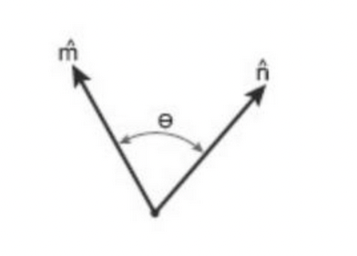
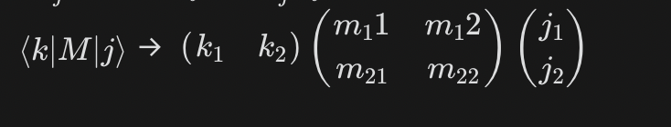

Table of Contents
- 1. How to deal with quantum
- 2. Lecture 1: Cubits
- 3. Lecture 2: Quantum Logic
1 How to deal with quantum
- It is not particularly the instance of something that we are talking about; we are actually talking about how the instances transform against and into each other
- That what we are talking about doesn't really matter; i.e. "cubits" instantiated as Protons, or Electrons, no need to worry. Just apply operations on cubits
2 Lecture 1: Cubits
Instead of looking at fields, we then proceed to look at their interactions.
2.1 Cubits
So what's a cubit? Its information. We will think about a Cubit as a pair: its a question and answer — a type of property. We don't care what cubits are, we need to describe instead their properties and interactions with the world.
Cubits are essentially a game: you specify a direction and ask a question to the cubit:
"Given this direction, what are you?" The cubit answers:
- Up, 1, yes!
- Down, 0, no.
It can only answer yes or no.
All quantum properties are described using a cubit, which interacts in a similar way.
Spin and Charge are not physical properties: points in spacetime have numerical "spin" , "charge", which do not correlate to actual motion and are instead just arbitrary actions. "Spacetime" — where you are physically in a space — are also arbitrary.
Cubits, therefore, is simply "the ability to encode and answer the above questions for properties."
2.2 Elementary Particles
Protons and electrons are point particles: they have no special extent; they themselves are the basis of other materials. Each point can have several degr. of freedom.
2.3 More Cubit Properties
Cubits remember the answer you give it in the past. If you point it to one direction, it will always return that answer. If you point it to the opposite direction, it will return the opposite answer.
Once you do that, if you point it to the orthogonal direction, it will return with 50% chance once answer, 50% chance the other answer.
Before your very first measurement, there is no modeling of the probability of spin of the cubit before the first measurement. It is essentially both spin at once.
What if you take a priming, turn it around by \(\theta\)? i.e.

As in: the expected value of the result at an angle is the dot product of the directions together.
For instance, if we did do the turn by 90 degrees thing, we will find \(\sigma =0\), that its neither up nor down (\(1+(-1)=0\)), with a \(50%\) chance of each.
The quantum or is not commutative. See notes.
2.4 Quantum Logic
We are interested in the process of quantum logic — the operations of things in quantum space. Don't think about "what is a cubit", instead, think about it as a series of questions and answers, like points in spacetime.
Quantum logic is built using the following rules.
We start with \(\mathbb{R}^3\). We will rotate our assay to the \(z\) direction. According to quantum mechanics, we have \(50\%\) chance of any orientation in \(\sigma_z\) (\(\pm1\ in\ \sigma_z\)); furthermore, there is \(25\%\) chance that the event produces \(\sigma_x = -1\) and \(\sigma_z = -1\) (\(\frac{1}{2^2}\)).
2.4.1 Quantum OR
Measuring via assay \(z\), then measuring via assay \(x\) later, therefore does not result the same probabilities as \(x\) then \(z\). Therefore, quantum OR is not commutative — first thing vs second thing changes the probabilities — as the first assay will prime the result of the second assay.
2.4.2 Quantum AND
Quantum AND is more intense then quantum OR. If you measure two things: \(x\) AND \(z\), you will get one result with probability. If you measure this again, you will \(100\%\) get the same result again.
2.5 Hey remember complex numbers?

2.6 Bra-Ket Notation
Take the following expression:
\begin{equation} z | A \big> \end{equation}Where \(|A\big>\) is a column vector ("a ket"), \(z\) is some complex number.
2.6.1 What if we took its conjugate?
Remember that:
\begin{equation} |A\big> * = \bigSo therefore, transposing around involves transposing both components.
2.6.2 Applying a function
"apply the bra \(B\) upon the ket \(A\)".
Transposing works like how you thin.
2.6.3 Kets by themselves
"For every element in column vector \(i\), we first dot-product it upon the basis \(i\), then scale the basis back, and then add".
Also known as:
\begin{equation} |A\big> = \sum_i \alpha_i | i \big> \end{equation}("every element multiplied by")
2.6.4 Sandwhiches
\(M\) is some intermediate multiplication operation.
So, this is essentially

2.7 Simple Cubits
Let \(u,d\) be some basis in two dimension ("up, down"), as in:
\begin{equation} | u \big> = \begin{pmatrix} 1 \\ 0\end{pmatrix} \end{equation} \begin{equation} | d \big> = \begin{pmatrix} 0 \\ 1\end{pmatrix} \end{equation}And therefore:
\begin{align} \big"If a cubit is prepared up (has ket \(u\)), the probability to detect it down again (the bra \(d\)) is zero. Visa, versa."
And furthermore, for the overall probabilities:
\begin{equation} |A \big> = \alpha_u | u \big > + \alpha_d | d \big> \end{equation}Given that the spin has been prepared in the state \(|A\big>\), and the apparatus is oriented along \(z\), the quantity \(a_u^*a_u\) is the probability that the spin would be measured as \(\alpha_z = +1\). In other words:
\begin{equation} \alpha_u^*\alpha_u + \alpha_d^*\alpha_d = 1 \end{equation}Furthermore:
\begin{equation} \big"the probability of getting state \(A\) given primed \(A\) is 1". Plug this into the above expression and try it out for yourself.
2.8 Algebraic Representation
To make quantum laws work, we have to allow for a part of what's going on to be non-observable. As the thing propergates, the imaginary and real compoents gets mixed up — you cann't a priori determine the observable parts.
Duality of meaning between \(5\) the rvalue and \(5\) the operator.
2.9 Results are not Measurements
"The results of a measurement are the eigenvalues of the operator that represents the observable."
\begin{equation} M | \lambda_1 \big> = \lambda_1 | \lambda_1 \big > \end{equation} \begin{equation} M | \lambda_2 \big> = \lambda_2 | \lambda_2 \big > \end{equation}Given its an eigenvalue, the above claims makes sense. Eigenvalues don't move except for scale after a matrix transformation.
Take two expressions representing the eigenvector/eigenvalues of a 2x2 matrix \(M\). The "ket" operator here represent the eigenvector, whereas \(\lambda _1\) isolated represent the eigenvalue.
We will set:
\begin{equation} \lambda_1 = \begin{pmatrix} \alpha_1 \\ \alpha_2 \end{pmatrix}, M = \begin{pmatrix} 0 & 1 \\ 1& 0\end{pmatrix} \end{equation}\(M\) is here represented as one of the Pauli matricies.
Therefore, now, we can say the following expression:
\begin{equation} \begin{pmatrix} 0 & 1 \\ 1&0 \end{pmatrix}\begin{pmatrix} \alpha_1 \\\alpha_2 \end{pmatrix} = \lambda_1 \begin{pmatrix} \alpha_1 \\ \alpha_2 \end{pmatrix} \end{equation}And, by staring at this expression, we get that:
\begin{equation} \begin{cases} \alpha_2 = \lambda_1 \alpha_1 \\ \alpha_1 = \lambda_1 \alpha_2 \end{cases} \end{equation}Therefore, it follows that:
\begin{align} &\alpha_1 = {\lambda_1}^2 \alpha_1 \\ \Rightarrow &{\lambda_1}^2 = 1 \end{align}So the eigenvalue is \(\pm 1\).
Supplying the expression back to the original, and solving, we will get \(\alpha_1 = \alpha_2\).
Given that \(\lambda_1\) is a state vector, we know that its a probability. We have discussed from before, that, for a state vectoContri
r:
\begin{equation} {\alpha_1}^*\alpha_1 + {\alpha_2}^*\alpha_2 = 1 \end{equation}And then, filling that in:
\begin{align} &2{\alpha_1}^* \alpha_1 = \pm 1 \\ \Rightarrow &{\alpha_1}^* \alpha_1 = \frac{1}{2} \end{align}And so \(\alpha_1 = \frac{1}{\sqrt{2}}\) is one case among many.
2.10 Crash Course on Operators
2.10.1 Unitary Matrices ("orthogonal matrices")
Some \(A\) where
\begin{equation} A^*A = I \Leftrightarrow A^* = A^{-1} \end{equation}where, \(A^*\) is the conjugate transpose (conjugate the complex numbers, transpose the matrix), i.e. the "hermitian", of the matrix.
Properties:
- If \(U\) is unitary matrix, and \(a\) is a vector, \(||Ua|| = ||a|||\).
2.10.2 Hermitian Matricqs ("symmetric matrices")
Some \(A\) where
\begin{equation} A^* = A \end{equation}where the matrix its own hermitian as hermitian is defined above.
2.10.3 Adjoin
Define adjoin of a matrix \(U\) to be the matrix \(V = U^*\) such that:
\begin{equation} V[r,c] = \bar{U}[c,r] \end{equation}2.10.4 Tensor Product of Matrices
if \(U\) in \(m\times n\), and \(V\) is \(r \times s\), \(\vec{c}(ij) = \vec{a}(i)\vec{b}(j)\), then \(W = U \otimes V\) is the \(mr \times ns\) matrix, where:
\begin{equation} (Wc)(ij) = (Ua)(i)(Vb)(j) \end{equation}3 Lecture 2: Quantum Logic
Let's take some vector \(a\), we will index it using binary:
\begin{equation} \vec{a}(00), \vec{a}(01) \cdots \end{equation}Therefore:
\begin{equation} \vec{e}_{00} = \begin{pmatrix} 1 \\ 0 \\0 \\ 0 \end{pmatrix}, \vec{e}_{01} = \begin{pmatrix} 0 \\ 1 \\0 \\ 0 \end{pmatrix}, \ldots \end{equation}where \(e\) is the basis.
3.1 Tensor Products
Their tensor product, \(\mathbb{H}_1 \otimes \mathbb{H}_2\) has the vectors of form \(\vec{a}(k)\), where \(1 \leq k \leq mn\). The tensor product of two vectors \(\vec{a}\) and \(\vec{b}\) is the vector \(\vec{c}=\vec{a} \bigotimes \vec{b}\), where:
\begin{equation} \vec{c}(ij) = \vec{a}(i)\vec{b}(j) \end{equation}it has to do with state spaces of individual cubits. Its not motivated but that's fine.
The important thing about tensor products is that they can be easily indexed using binaries according to the \(ij\) rule above.
3.2 Entanglement
A vector denoting a pure quantum state is separable if its the tensor product of two other vectors; otherwise its entangled.
Take the tensor product of the basis:
\begin{equation} | u \big > \otimes | d \big > = \begin{pmatrix} 1 \begin{pmatrix} 0 \\ 1 \end{pmatrix} \\ 0 \begin{pmatrix} 0 \\ 1 \end{pmatrix} \\ \end{pmatrix} = \begin{pmatrix} 0 \\ 1 \\ 0 \\ 0 \end{pmatrix} \end{equation}You can think of the combined state, therefore, \(|ud \big>\) is not entangled.
Let's take another example, what if we have a state:
\begin{equation} \begin{pmatrix} 1 \\ 0 \\ 1 \\ 1 \end{pmatrix} \end{equation}If we attempt to solve for some
\begin{equation} \begin{pmatrix} ac \\ ad \\ bc \\ bd \end{pmatrix} \end{equation}we will not get vectors \([a,b]\), \([c,d]\) which would then qualify as being a state.
3.3 More Stuff
Often, our quantum algorithms will operate on the product of two Hilbert spaces, using binary strings as indices, and giving us the space of vectors in the form \(\vec{a}(xy)\). \(x\) ranges over the indices of the first space, \(y\) over that of the second space.
We can also index things like:
\begin{equation} a(01\ 10) \end{equation}That would be the 6th element in \(a\) (\(01_2\) (2) + \(10_2\) + (3) = \(5_{10}\) which is the 6th element.)